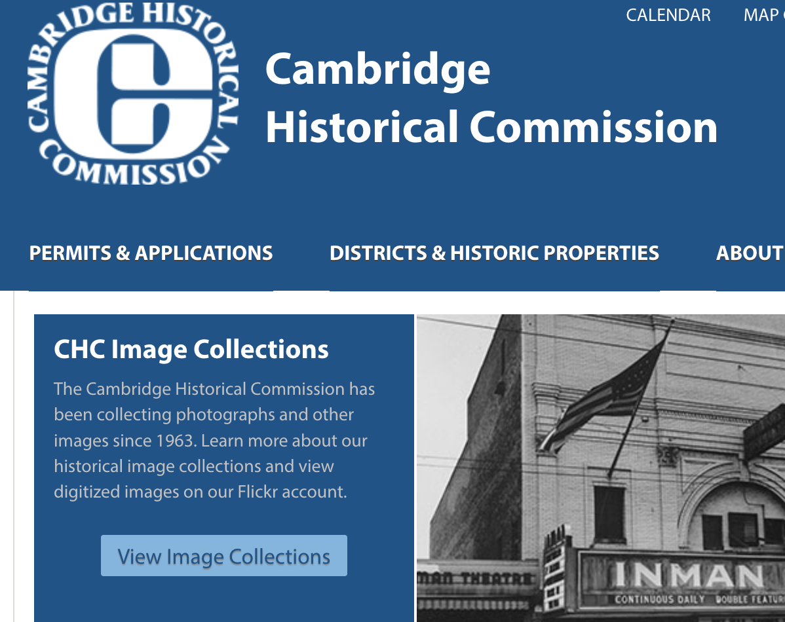

-
The Cambridge Women's Heritage
Project is jointly sponsored by the Cambridge
Women's Commission

And by the Cambridge Historical Commission
 -
The
National Women's History Project includes ideas to help teachers,
parents, and community organizations to
celebrate Women's History.
You can also find out about programs and exhibits that are being sponsored in your area.

Women's History Links:
- Women's History Self Guided Tours:
- Documentary about the battered women's shelter movement
- Filament/Firmament public art piece
- AMITA's exhibit: Celebrating Women at MIT
- Harvard College Women's History Tour
- Schlesinger Library
- Boston Women's Heritage Trail
- Salem Women's Heritage Trail
- Women of Valor exhibit at the Jewish Women's Archive
- Margaret Fuller Bicentennial, 2010
- National Collaborative for Women's History Sites
- Primary Research: Women's Suffrage in Massachusetts
- Library of Congress' American Women Gateway
- Enterprising Women Exhibit
- Teacher's Guide: Women's History in the United States
- Places Where Women Made History
For more information, contact either:
|
Emily Shield |
Sarah Burks Cambridge Historical Commission 831 Massachusetts Avenue, 2nd Fl. Cambridge, MA 02139 617-349-4687 sburks@cambridgema.gov |
Cambridge
Women's Heritage Project
Last updated: March 2025